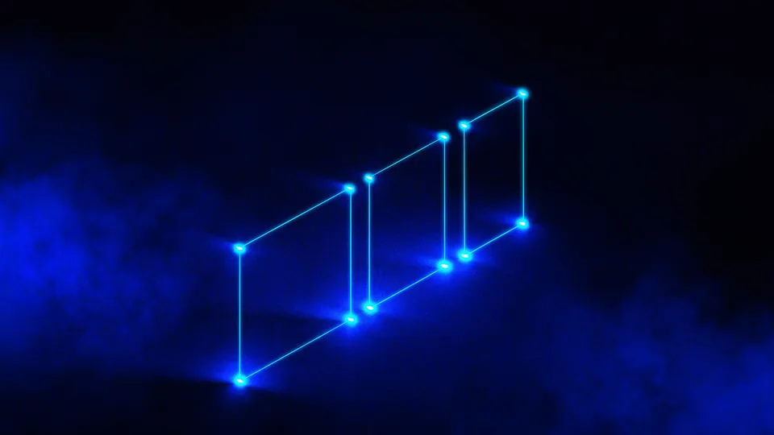

Storyboard Hazırlama Neden Çekimden Önce Gelir?
Çünkü kareyi tartışmanın en ucuz yeri masadır. Storyboard hazırlama aşamasında bir kadraj değiştirmek dakikalar alır; sette aynı değişikliği ekip beklerken yaparsınız. Kâğıt üzerinde silinen bir plan, çekim gününden bir saat geri kazandırır. Hazırlık bir gider değil, en yüksek getirili kalemdir. Bunu her projede yeniden ölçüyoruz.
Sette herkes aynı anda bekler: ekip, ekipman, oyuncu ve mekân. O yüzden orada verilen her karar çarpan etkisiyle pahalanır. Prodüksiyon öncesi masada aynı kararı vermek yalnız birkaç kişinin zamanını harcar.
Aşamaların nasıl sıralandığını çekim aşamaları yazısında anlatmıştık. Hazırlık turunda storyboard, o sıranın en görünür çıktısıdır.
Bu adımın karşılığını çekim gününde görürsünüz. Storyboard hazırlama turu tamamlanmışsa set yalnız uygulamaya odaklanır; tamamlanmamışsa aynı soruları ekip beklerken sorarsınız. Hazırlama sırasında storyboardu birlikte gözden geçirmek, bu farkı yaratan asıl adımdır.
Küçük İşlerde de Gerekli mi?
Tek planlık bir iş için gerekmeyebilir. Ama iki plandan fazlası varsa sıra tartışması başlar ve o tartışma kâğıtsız yürümez. Kısa işlerde bu hazırlık yarım saat sürer; atlamanın kazandırdığı süre bu kadardır.
Storyboard Neyi Gösterir, Neyi Göstermez?
Kadrajı, ölçeği ve sırayı gösterir. Oyunculuk, ışığın niteliği ve ritim ise kâğıtta görünmez. Bu yüzden storyboard hazırlama işi bir sanat çalışması değil, bir karar belgesidir. Çizim güzelliği önemli değildir; anlaşılırlık önemlidir. Çöp adamla çizilmiş bir kare, ayrıntılı ama belirsiz bir çizimden iyidir.
Her karenin yanına iki satır not düşeriz: kamera ne yapıyor ve sahnede ne oluyor. Bu notlar çizimden çok işe yarar, çünkü hareketi kâğıt taşımaz.
Bir karenin taşıması gereken dört bilgi vardır.
- Kadraj — kamera ne görüyor, ürün nerede duruyor.
- Ölçek — geniş plan mı, yakın plan mı.
- Hareket — kamera ya da özne hareket ediyor mu.
- Sıra numarası — bu kare hangi planın neresi.
Çerçeveleme kararları burada kesinleşir. Ürün kadrajın neresinde duracak, yüz mü ürün mü öne çıkacak, boşluk nerede kalacak? Kompozisyon ilkelerini arayüz tasarımı ilkeleri yazısındaki hiyerarşi mantığıyla birlikte düşünmek de yararlıdır. Senaryo ve storyboard birer eserdir; telif mevzuatı hakkın kime ait olduğunu belirler.
Çizim Yeteneği Şart mı?
Değil. Kutular, oklar ve çöp adamlar işi görür. Amaç kimin nerede durduğunu ve kameranın ne gördüğünü anlatmaktır; bunun için yetenek değil netlik gerekir.
Kaç Kare Çizmek Gerekir?
Her plan için en az bir kare gerekir. Hareket varsa başlangıç ve bitiş karelerini ayrı çizeriz. Otuz saniyelik bir filmde on beş ila yirmi beş kare olağandır. Storyboard hazırlama süresi kare sayısıyla değil, karar sayısıyla uzar. Aynı kareyi üç kez çizmek, üç ayrı kare çizmekten uzun sürer.
Kare sayısını hikâye belirler, süre değil. Hızlı kesmelerle ilerleyen otuz saniyelik bir film, tek planlık bir dakikadan çok daha fazla kare ister.
Kalabalık bir kare listesi de kendi başına bir uyarıdır. Otuz saniyeye kırk kare sığdırmaya çalışıyorsanız, sorun çizimde değil senaryodadır.
Kareleri numaralandırmayı da unutmayın. Sette çekim listesiyle kareler numara üzerinden eşleşir; numarasız bir taslak, arayışla geçen dakikalar demektir. Storyboard hazırlama işinin en sıkıcı ama en çok işe yarayan ayrıntısı budur.
Kaç Turda Onaylanır?
İki tur olağandır. Üçüncü tur dönüyorsa mesele kadrajda değil, anlatmak istediğiniz şeyin kendisindedir. O zaman bir adım geri gider, senaryoyu yeniden konuşuruz.
Storyboard Hangi Hataları Baştan Yakalar?
Üç hatayı düzenli olarak yakalar. Ürün kadrajdan düşer, sıra hikâyeyi bozar ya da mecra oranı uymaz. Dikey yayın yapacaksanız bunu kâğıtta görmek şarttır. Storyboard hazırlama turunda fark ettiğiniz bir oran sorunu, çekimden sonra fark edilenden çok daha ucuza kapanır. Bu üç hata en sık görülenlerdir.
Oran meselesi en sinsi olanıdır. Yatay çekilmiş bir plan dikeye kırpıldığında ürün çoğu zaman kadrajın dışında kalır; bunu ancak yayın günü fark edersiniz. Kare taslağını her oran için ayrı ayrı kontrol etmek bu riski tümüyle kaldırır.
Sıra hatası da benzer biçimde ucuza kapanır. Kareleri masaya dizip yerlerini değiştirmek dakikalar alır; aynı denemeyi çekilmiş görüntüyle yapmak bir kurgu turu ister. Bu tür kayıpların bütçeye yansımasını fiyat kalemleri yazısında ele aldık.
Kadraj hatası da aynı mantıkla ucuza kapanır. Ürünün etiketinin okunup okunmadığını kâğıtta işaretlemek saniyeler alır. Aynı sorunu çekim sonrası fark ettiğinizde önünüzde iki yol kalır: yeniden çekim ya da kurguda kırpma. İkisi de istemediğiniz yollardır. Kâğıtta bir dakika, sette bir saat eder.
“Kâğıtta silinen kare bedavadır. Sette silinen aynı kare, bekleyen bir ekibin saatine mal olur.”
— TasarımMania prodüksiyon notu
Animatik Nedir, Ne Zaman Gerekir?
Hareketli taslak, karelerin süreye yayılmış hâlidir. Kareleri arka arkaya dizip müzikle birlikte izlersiniz; böylece ritmi çekimden önce duyarsınız. Karmaşık akışlarda ve uzun filmlerde işe yarar. Storyboard hazırlama bittiğinde animatiğe geçmek birkaç saat alır, ama tempoyla ilgili tartışmayı tümüyle kapatır. Kısa ve basit işlerde gerekmez.
Ritim kâğıtta görünmez. Beş karelik bir dizi çok hızlı da olabilir çok yavaş da; hangisi olduğunu ancak süreye yayınca anlarsınız. Animatik bu belirsizliği kapatır.
Müzikle birlikte izlemek de ayrı bir kazançtır. Parçanın vuruşlarıyla kesme noktalarının nereye düştüğünü erken görürsünüz. Bu, montaj aşamasında bir turu tek başına eritir.
Animatiği Kim Hazırlar?
Kurgu ekibi hazırlar ve genelde birkaç saat sürer. Kareler zaten elde olduğu için iş, onları süreye yaymak ve geçici bir müzik yerleştirmekten ibarettir. Hazırlarken storyboardun eksik kalan yerleri de kendiliğinden görünür. Storyboard hazırlama turunu tamamlamadan animatiğe geçmeyin.
Hazırlığınızı Birlikte Yapalım
Hazırlığı birlikte yapmak en hızlı yoldur. Senaryoyu, kare listesini ve mecra oranlarını tek oturumda masaya koyuyoruz. Elinizde bir çizim dosyası değil, onaylanmış bir karar listesi kalıyor. Storyboard hazırlama turunu atlayan projeler, kaybettikleri saati sette geri veremez. O saat her zaman en pahalı saattir.
Oturumdan çıkarken üç şey netleşmiş olur: kare listesi, her karenin oranı ve onay tarihi. Reklam filmi hizmetimizi ve video prodüksiyon sayfamızı inceleyebilirsiniz.
Oturuma senaryonuzu ve varsa referans görsellerinizi getirin. Elinizde yalnız bir fikir varsa da sorun değil; kareleri birlikte çıkarırız. Storyboard hazırlama masasında en çok işe yarayan şey, neyi anlatmak istediğinizi tek cümleyle söyleyebilmenizdir. O cümle yoksa kareler de dağınık çıkar; önce onu birlikte buluruz.

Storyboard neyi çözer, neyi çözmez
| Konu | Kâğıtta çözülür mü? | Nerede çözülür |
|---|---|---|
| Kadraj ve ölçek | Evet | Kare taslağında |
| Plan sırası | Evet | Kareleri masada dizerek |
| Mecra oranı uyumu | Evet | Her oran için ayrı kontrol |
| Ritim ve tempo | Hayır | Animatikte |
| Işığın niteliği | Hayır | Sette, ışık kurulumunda |
| Oyunculuk | Hayır | Provada |
Storyboard hazırlama bir çizim işi değil, karar kapatma işidir. Kadrajı, sırayı ve mecra oranını kâğıtta çözdüğünüzde çekim günü yalnız uygulamaya kalır; sette açık kalan her soru ise hem zamanı hem bütçeyi büyütür.